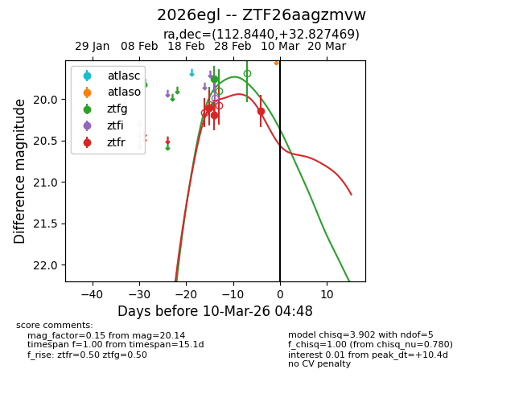
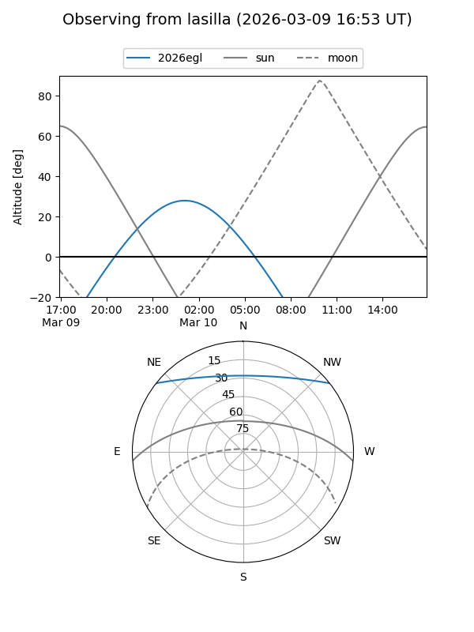
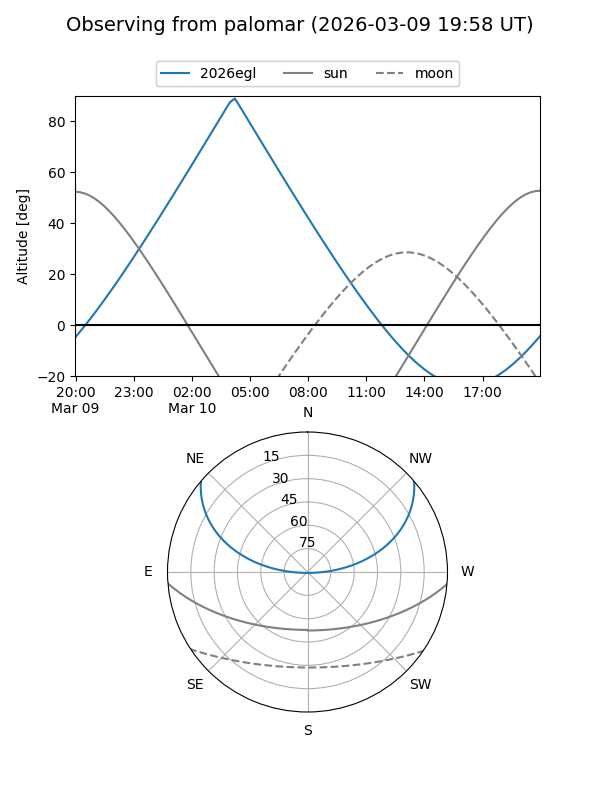
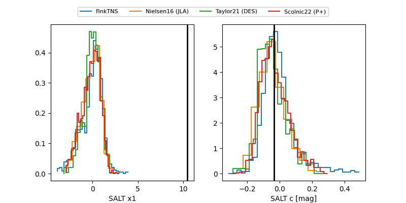

2026egl
Target 2026egl at 2026-03-10 04:50
Aliases and brokers:
FINK: link
Lasair: link
ALeRCE: link
TNS: link
YSE: link
alt names
ZTF26aagzmvw (ztf,fink_ztf)
2026egl (tns,yse)
Coordinates:
equatorial (ra, dec) = 112.8440,+32.82747
equatorial (HMS+DMS) = 07:31:22.56,+32:49:38.89
galactic (l, b) = (186.2425,+22.13933)
Flags:
Photometry:
last ztfg=19.76, ztfr=20.14
1 ztfg, 3 ztfr detections
Lightcurve

Visibility


Additional plots
